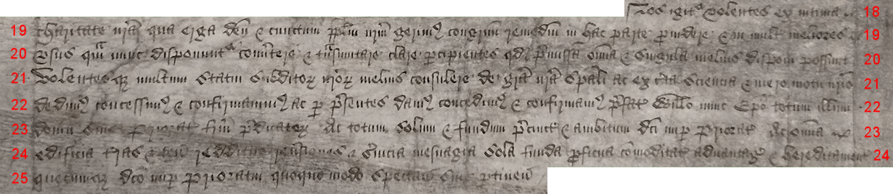
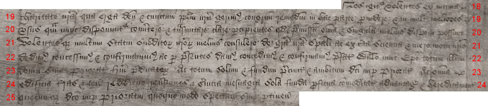
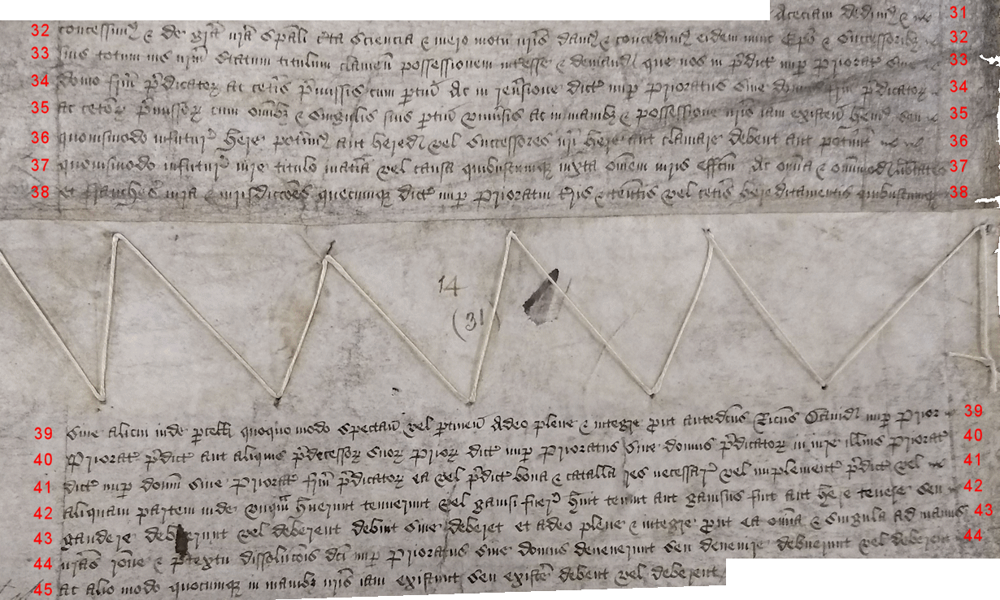
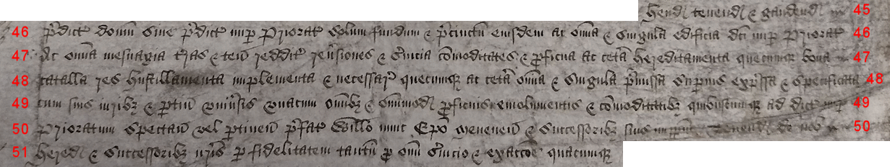
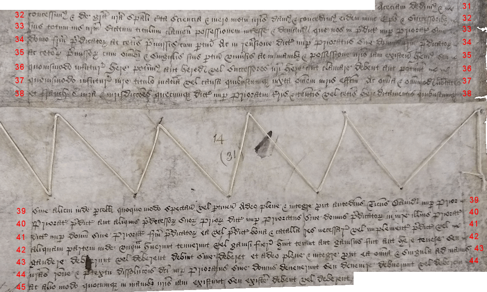
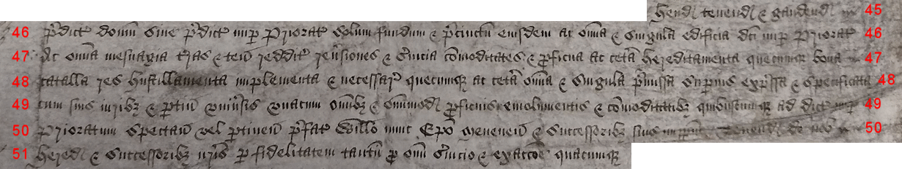
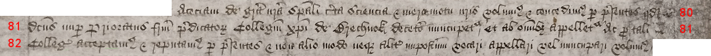
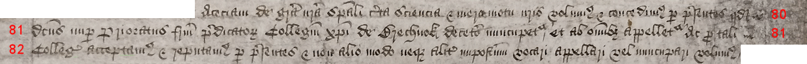
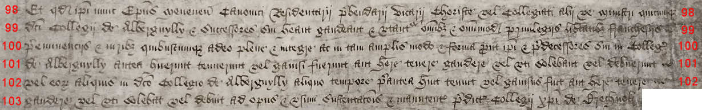
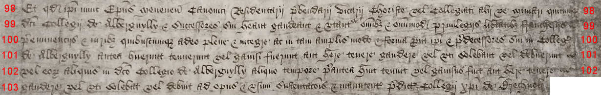

Images and transcription: Witness R
The following page includes images taken from the oldest copy consulted, the Patent Roll, which we have designated Witness R. [include internal link to ms description]
This has been provided principally as a palaeography exercise for those wishing to learn to read this specific type of hand, which was commonly used in the royal Chancery during this period. The text has been broken into blocks and the lines have been numbered.
The transcription here differs in several respects from the version of R used in the comparison texts. This is because they serve different purposes.
In the comparison, certain differences between R and the other copies were ignored as being semantically insignificant. We could have chosen to mark them up in our XML document but elected not to, as this would have introduced a great deal of extraneous markup (multiplying not only tedium but also opportunities for human error) and would have thrown off the computer-generated calculations of the number of variations among the texts.
Principally, these are matters of orthography (spelling conventions). Witness R continues the medieval practice of condensing all -ae- and -oe- diphthongs to a bare -e-, while all the other copies consulted and compared had "corrected" the orthography, in accordance with Classical/Renaissance Latin standards, by using -ae- and -oe-. However, the text of R as rendered below sticks to the -e- orthography used in the document, as the goal is to give a more literal transcription.
Similarly, in this hand (as in some others of the era), small -c- and -t- are often very similar in form and sometimes entirely indistinguishable, especially when found in the middle of a word, and most notably as part of a -cio- or -tio- formation. Here they are transcribed according to the closest appearance, which in practice -cio- often appears where -tio- would appear in a classical/Renaissance Latin spelling of the word.
The text of R does not include the more modernized punctuation used in the later copies, which we did not mark as variants in our comparison; the transcription here adheres to the punctuation (or lack thereof) found in this copy.
Capitalization is also something of a guessing game at times. We are accustomed, in a world of print and type, to a strict distinction between upper- and lower-case letters (terms that themselves arise from the printer's shop). This distinction is not so clear in many manuscripts, even long after the advent of printing. Different copies of the Brecon Letters Patent consulted in our project did not always agree on the use of majuscule (capital) letters, and as this was a scribal choice that was unlikely to help us answer our research questions, we ignored it in our markup. We have given a more literal transcription below, but caveat lector: the these represent judgment calls on the part of the transcriber, and you are free to disagree with them.
The first image is an index note from the left-hand margin of the roll:

Willelmo Episcopo
Meneven' de con[cessione]
sibi et successoribus.
¶ Rex omnibus ad quos et c' salutem. Cum Collegium de Alberguylly in loco inidoneo existit ubi nulla occasio hospitalitatis
2. aliis per viros dicti Collegii administrande datur ad commodum et utilitatem subditorum nostrorum in locis dicto Collegio adjacentibus
3. ad grave dampnum dictorum ligeorum nostrorum /

3. Cumque eciam domus sive Prioratus fratrum predicatorum in oppido nostro de Brechnok
4. in australibus partibus Wallie cum omnibus et omnimodis mesuagiis terris et tenementis bonis rebus necessariis et implementis ad dictum
5. nuper Prioratum spectantibus in manibus et possessione nostris iam existunt vel existere deberent pretextu doni concessionis ac sursum
6. reddicionis Ricardi Davidi nuper Prioris et Conventus eiusdem nuper Prioratus nobis inde facte virtute cujus nos in iure
7. Corone nostre Anglie de dicto nuper Prioriatu mesuagiis terris tenementis ac ceteris omnibus et singulis premissis seisiti sumus in dominico
8. nostro ut de feodo

8. Cumque eciam subditi et ligei nostri in dictis partibus australibus Wallie commorantes, summa egestate
9. oppressi filios suos in bonis literis educare non possunt et in dictis partibus australibus Wallie nullus ludus literarius habetur per
10. quod non solum et clerici et laici omnis etatis et condicionis rudes et ignari redduntur tam sui officii erga deum quam debite
11. sue obediencie erga nos sed eciam lingue vulgaris Anglie minime periti sic quod statuta nostra in huiusmodi casu
12. edita et provisa observare nequeunt / Et quod debuerunt et tenentur facere secundum formam et effectum dictorum statutorum intelligere
13. non possunt propter ignoranciam dicte lingue Anglicane
 

 





 



 
